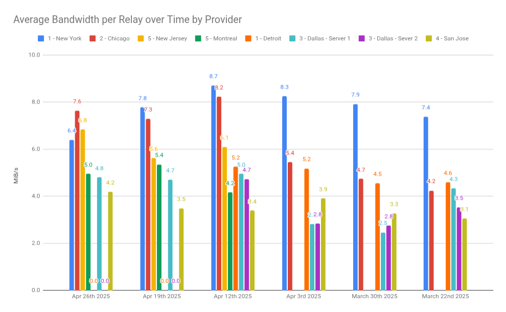
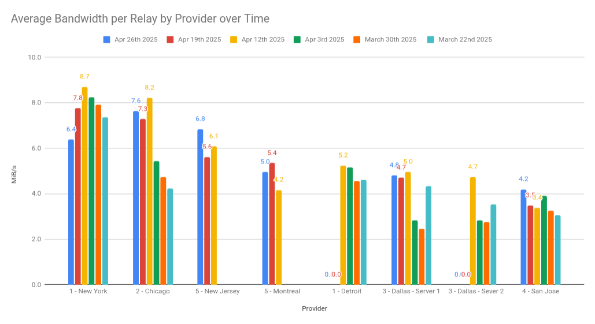

If you're a software developer who cares about freedom of information—or an IT ops admin with a spare rack and skills to spare—this post is for you. Let's talk about how you can use your talents to support the Tor network.
New York saw the fastest growth, rising from 7.38 Mbps to 8.70 Mbps over three weeks. Chicago improved steadily, while Detroit’s performance increased modestly. Dallas experienced mixed results, and San Jose’s lower performance is likely related to further distance from US East / Europe where there's more Tor traffic allocated.
Temporary dips in bandwidth corresponded to migration from rented IPv4 ranges to our own prefixes. All servers run Ubuntu 24.04.02 with the latest Tor versions, using 88–192 CPU threads and 384–1000 GB RAM on unmetered 10 Gbps connections. Each server costs approximately $500/month.
| Provider (Rank) | Apr 26th 2025 | Apr 19th 2025 | Apr 12, 2025 | Apr 3, 2025 | Mar 30, 2025 | Mar 22, 2025 |
|---|---|---|---|---|---|---|
| 1 – New York | 6.4 | 7.8 | 8.70 | 8.25 | 7.91 | 7.38 |
| 2 – Chicago | 7.6 | 7.3 | 8.22 | 5.44 | 4.73 | 4.24 |
| 5 – New Jersey | 6.8 | 5.6 | 6.1 | 0 | 0 | 0 |
| 5 – Montreal | 5.0 | 5.4 | 4.2 | 0 | 0 | 0 |
| 1 – Detroit | 0 | 0 | 5.25 | 5.17 | 4.55 | 4.60 |
| 3 – Dallas 1 | 4.8 | 4.7 | 4.95 | 2.82 | 2.46 | 4.34 |
| 3 – Dallas 2 | 0 | 0 | 4.73 | 2.84 | 2.76 | 3.52 |
| 4 – San Jose | 4.2 | 3.5 | 3.38 | 3.90 | 3.26 | 3.06 |


Another Tor relay contributor, John Crow highlighted that New York and Chicago are major hubs (often Secaucus, NJ for “New York”). He recommended exploring Ashburn, VA—an established Internet hub with robust US and EU connectivity—and Miami, FL, which offers strong connectivity to South America. He also noted San Jose’s underperformance likely stems from additional hops through Los Angeles.
Early data suggests that while New York and Chicago deliver the best bandwidth per relay, alternative locations like Ashburn and Miami warrant testing. Patience is crucial; as relays “brew” beyond two months, performance patterns often stabilize. We’ll continue refining our deployments and welcome further community insights.
For full details and discussion, see the Tor Project mailing list thread.
Join the Mission